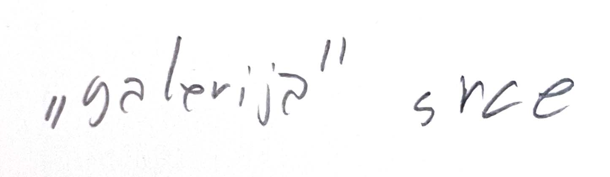
Koncept prijedloga se temelji na komunikaciji osobina samog multifunkcionalnog prostora, tj. kakav to prostor je, otvoren, ugodan, prijateljski nastorijen, nedominantan, mekan.
Najbitniji dio koji logo komunicira je iz želje naručitelja da ne isključuje druge. Iz toga je proizašla ideja o toleranciji i različitosti koje logo, kao i ostatak vizualnog identiteta komuniciraju. Slova u logotipu su različitia i formom ne povezani jedni s drugim, ali usprkos tome dijele zajednički prostor. Različita visine slova dodatno naglašavaju kohabitaciju različitosti.
Raznolikost formi takođe naglašava raznolikost samih dogašaja koji se održavaju u kulturnom prostoru, od izložbi i čitanja poezije do radionica za djecu.
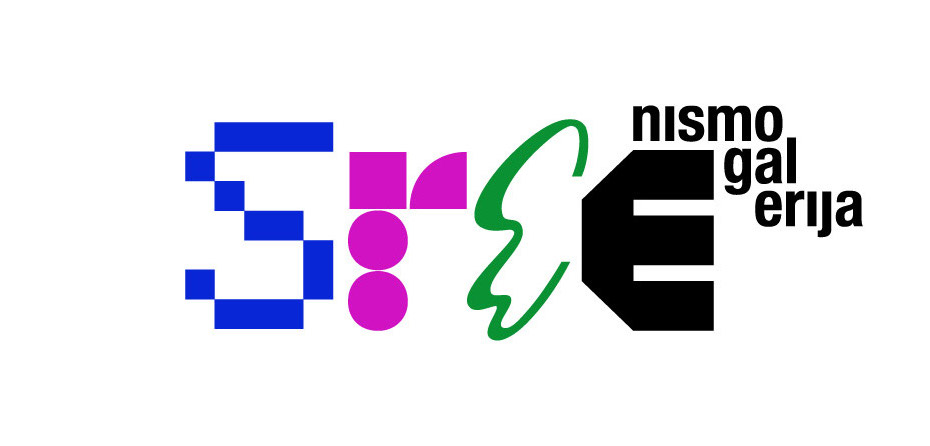
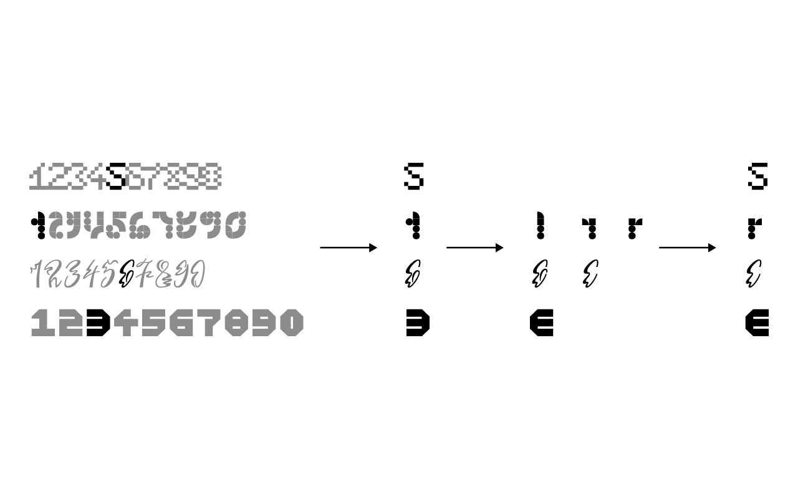
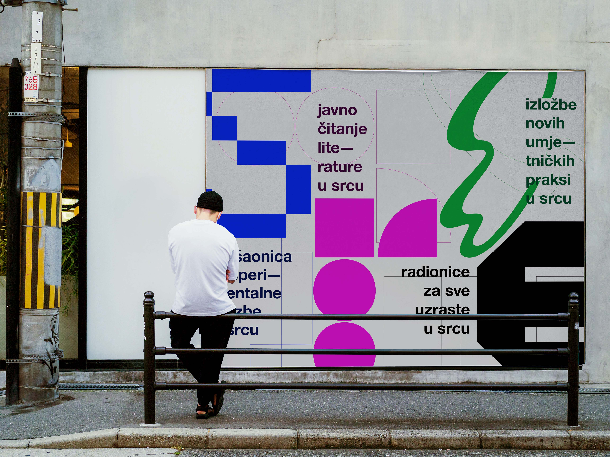
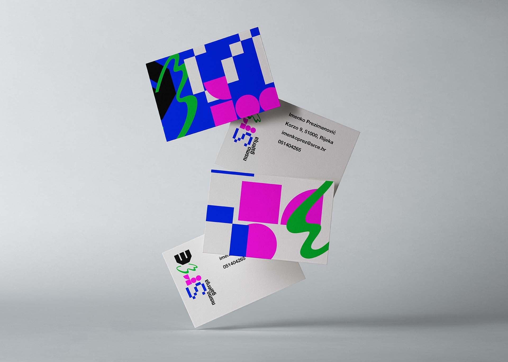
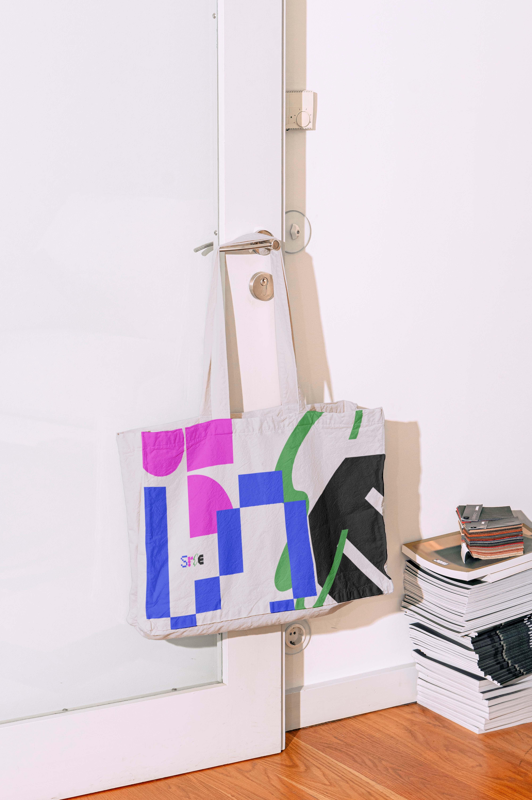
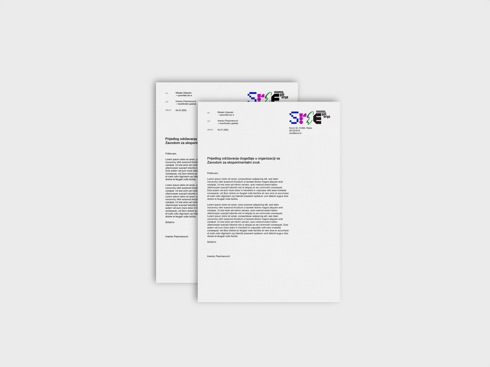
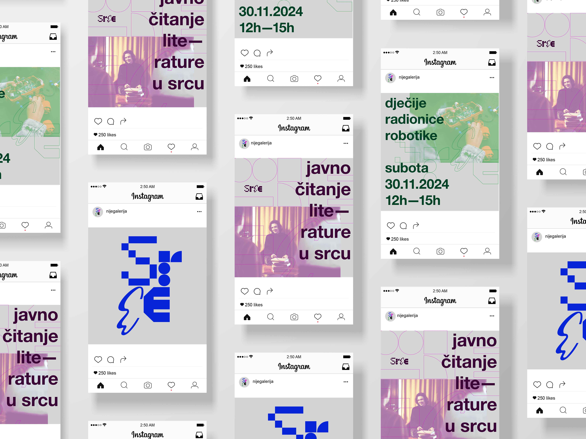
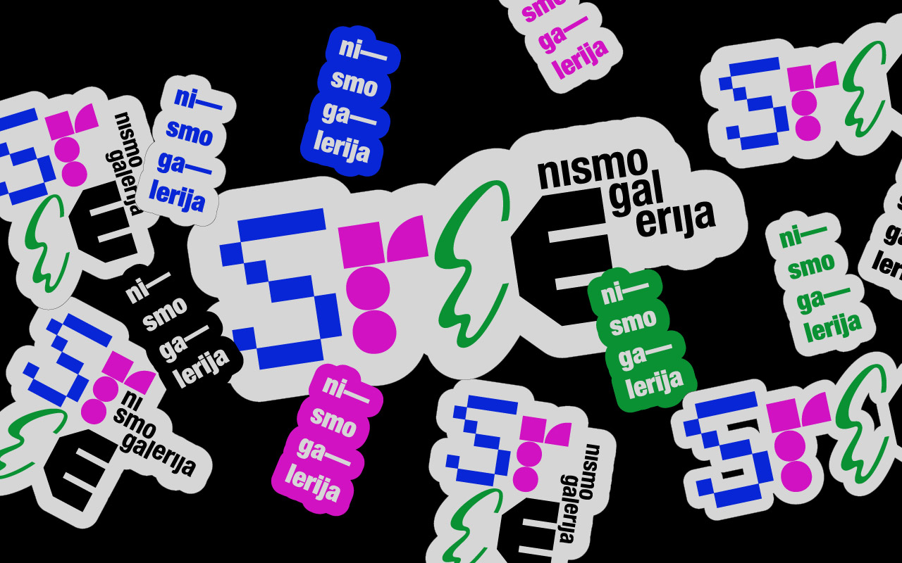
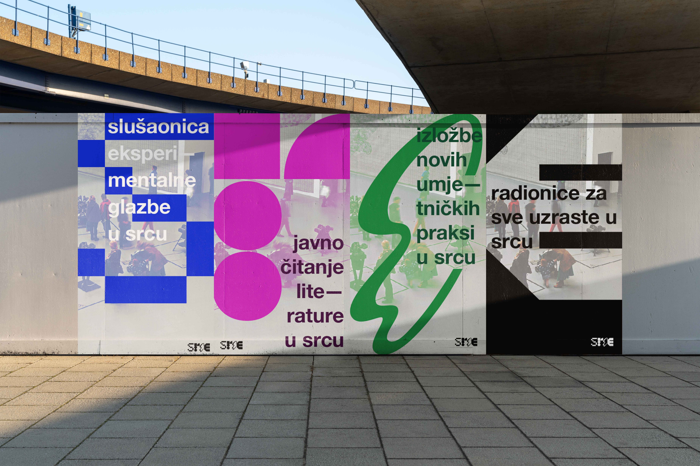
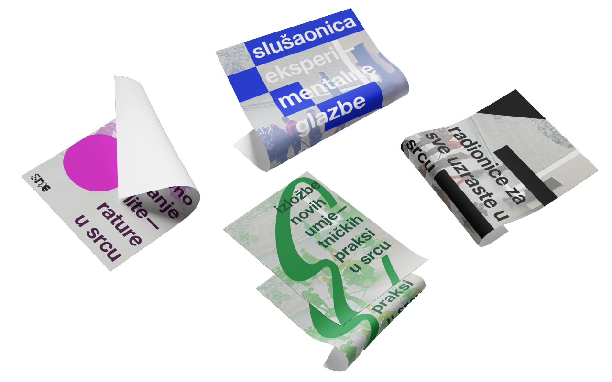